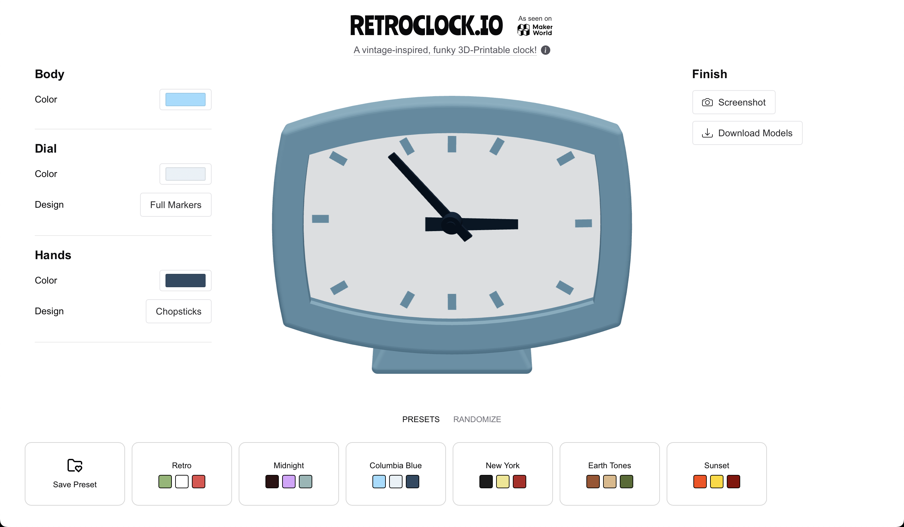
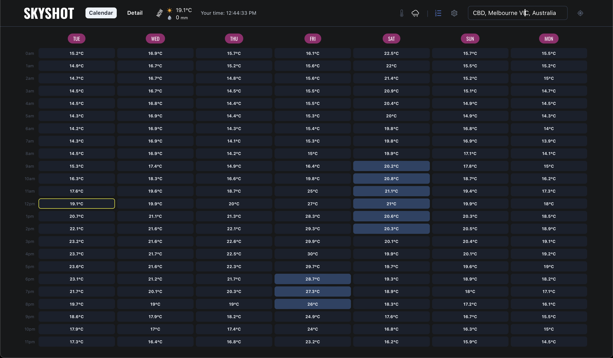
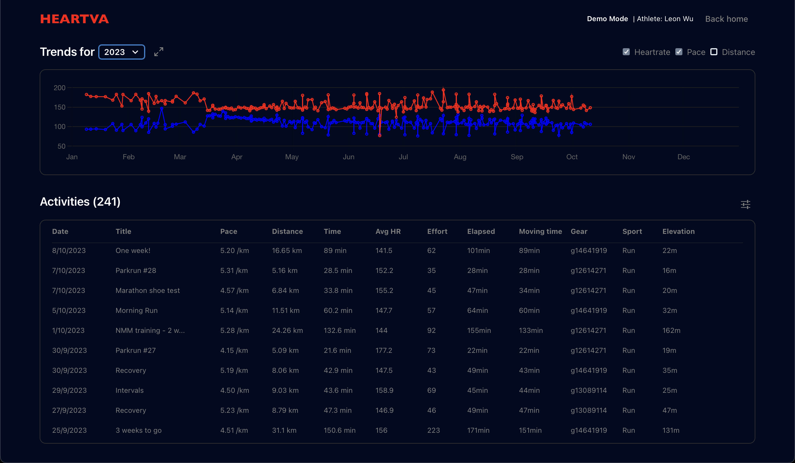

Hi, I’m Leon Wu
Full-stack developer in Melbourne, Australia. Interested in elegant UX, data visualization, and coding for good. When I'm not on VSCode, find me 3D printing or at a 🏃 parkrun.
Experience
2024-Now
👨💻Software Engineer @ Macquarie Bank
Full-stack engineer working on the bank's payments platform. Building and maintaining microservices and features to support a range of payments flows across the Australian banking space.
2022-2023
🎓 Master of Information Technology @ University of Melbourne
Masters degree focusing on computer science theory, data modelling, machine learning, and the software development lifecycle.
2022-2023
👨💻Software Engineer Intern @ ANZ Bank
Intern full-stack engineer building frontend and backend features for the business banking Orion platform.
Projects
retroclock.io
A 3D-printed clock customizer tool that allows users to design their own clock designs. Proudly built to showcase my own retro clock model on makerworld.com
Built with React, React-Three-Fiber, Drei.js. Modelled with Fusion 360
Skyshot
A React weather app that displays the forecast in a calendar view. Built in order to help me schedule social tennis sessions.
Built with React, Google Maps API
Heartva
A web app using the Strava API to visualize heart rate data and trends.
Built with React, Strava API
WACovidSites
A frontend in React, that extracts data from a community spreadsheet of self-reported COVID exposures.
Built with React, Axios, Google Sheets API